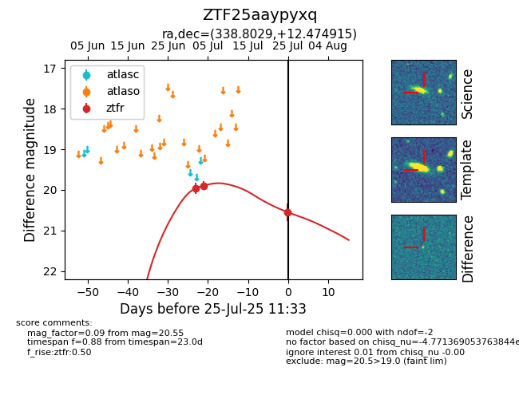

Target ZTF25aaypyxq at 2025-07-25 11:33, see:
FINK: fink-portal.org/ZTF25aaypyxq
Lasair: lasair-ztf.lsst.ac.uk/objects/ZTF25aaypyxq
ALeRCE: alerce.online/object/ZTF25aaypyxq
alt names
ZTF25aaypyxq (ztf,fink)
coordinates:
equatorial (ra, dec) = (338.8029,+12.47491)
galactic (l, b) = (78.6722,-38.42102)
photometry
last ztfr=20.55
3 ztfr detections
